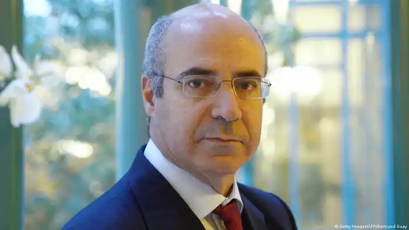

Вільям Фелікс Браудер або Білл Браудер (англ. William Felix "Bill" Browder) — міжнародний фінансист і інвестор. Співзасновник і генеральний директор інвестиційного фонду Hermitage Capital Management , який у період з 1995 по 2006 роки був одним з найбільших (за деякими оцінками найбільшим) фондів зарубіжних інвестицій, що діяли на російському фондовому ринку.
Народився в 1964 році. Онук Ерла Браудера, який очолював Компартію США в 1932-1945, син математика Фелікса Браудера, племінник Вільяма Браудера (1989-1991 президент АМО ).
Виріс в Чикаго, вивчав економіку в Чиказькому університеті. У 1989 отримав ступінь MBA Stanford Business School. З 1989 по 1996 жив у Лондоні. Отримав британське громадянство. Одружений. Працював у відділі Східної Європи Boston Consulting Group в Лондоні і завідував сектором приватних інвестицій у Росії Salomon Brothers. У 2005 році йому був заборонений в'їзд до Росії. Причини цього досі не оприлюднені. У 2006 році Браудер припинив діяльність фонду в Росії. З 2010 року Білл очолює кампанію з розслідування крадіжки податку на прибуток, сплаченого фондом в російський бюджет за підсумками 2006 року, і пошуку вбивць юриста фонду Сергія Магнітського, що виявив дану крадіжку. У липні 2013 року вироком російського суду заочно засуджений до 9 років колонії загального режиму. Щороку з 2007 по, як мінімум, 2015 на Давоському економічному форумі приходить на виступ найбільшого російського держчиновника, який приїхав на форум, і ставить запитання про вбивство Магнітського.